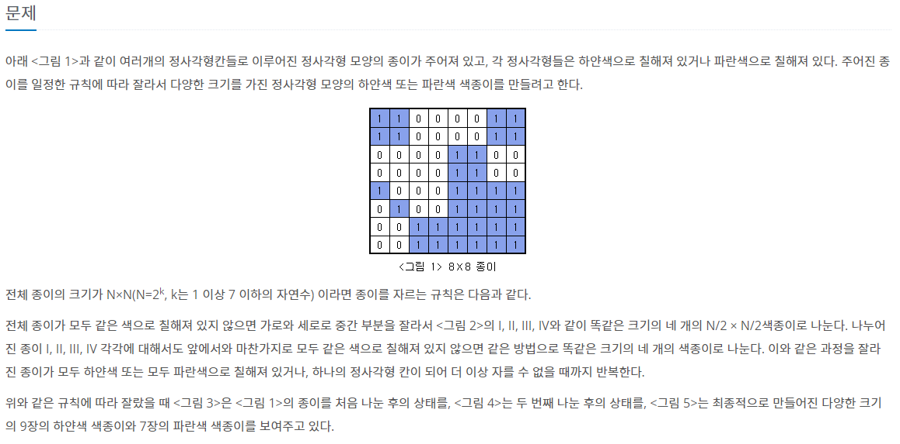
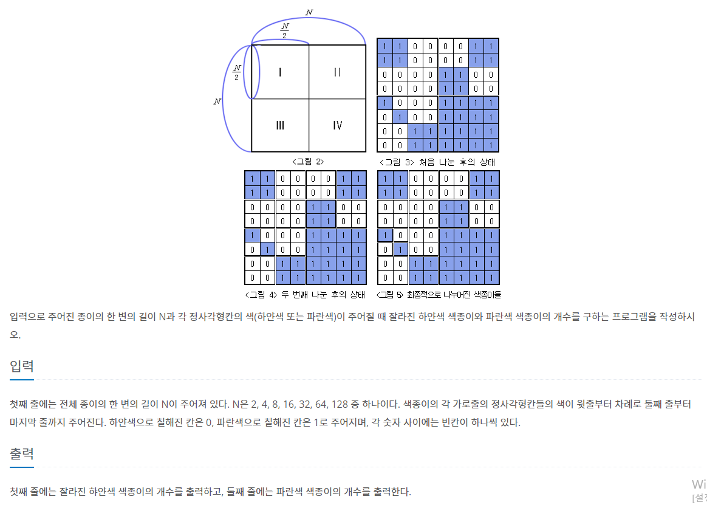
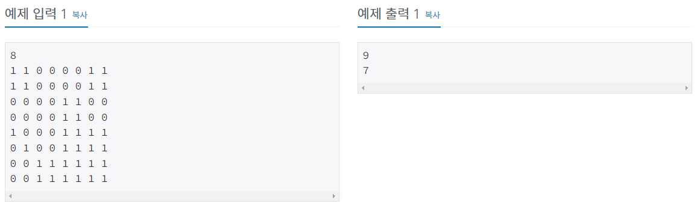

#INFO
난이도 : SILVER3
알고리즘 : 재귀
출처 : https://www.acmicpc.net/problem/2630
2630번: 색종이 만들기
첫째 줄에는 전체 종이의 한 변의 길이 N이 주어져 있다. N은 2, 4, 8, 16, 32, 64, 128 중 하나이다. 색종이의 각 가로줄의 정사각형칸들의 색이 윗줄부터 차례로 둘째 줄부터 마지막 줄까지 주어진다.
www.acmicpc.net
  
#SOLVE
색종이 배열 전체를 탐색하여 모든 원소가 1또는 0으로 같은지 판별 후 다르다면 4가지 구역으로 나누어 재귀를 수행하면 되는 간단한 문제이다.
색종이의 크기 n과 y, x 좌표를 인수로 받는 recur 함수를 선언한다.
void recur(int n, int y, int x)base condition (모든 재귀함수가 수렴하는 값) 은 1로 설정하고 색종이 배열의 원소가 1인 경우에는 blueCnt(파란 색종이의 수)를 1 증가, 배열의 원소가 0인 경우에는 whiteCnt(하얀 색종이의 수)를 1 증가시킨 후 리턴한다.
//base condition
if(n == 1){
if(paper[y][x] == 1){
blueCnt++;
}
else{
whiteCnt++;
}
return;
}모든 배열의 원소가 같은 값으로 저장되어 있는 지 배열 전체를 반복문을 돌려서 확인한다.
bool blue = true, white = true;
for(int i = y; i < y + n; i++){
for(int j = x; j < x + n; j++){
if(paper[i][j] == 1) white = false;
else if(paper[i][j] == 0) blue = false;
}
}만약 blue가 true라면 해당 구역의 모든 원소가 0으로 되어 있다는 뜻 이기에 blueCnt를 1증가시키고, white가 true라면 해당 구역의 모든 원소가 1로 되어 있다는 뜻 이므로 whiteCnt를 1증가시킨다.
blue , white 변수가 모두 false라면 모두 같은 색으로 칠해져 있지 않다는 뜻 이기에 4가지 구역으로 나누어 함수를 재귀적으로 호출한다.
if(blue){
blueCnt++;
return;
}
else if(white){
whiteCnt++;
return;
}
else {
recur(n/2, y, x);
recur(n/2, y, x+ n/2);
recur(n/2, y + n/2, x);
recur(n/2, y + n/2, x + n/2);
}#CODE
#include <bits/stdc++.h>
using namespace std;
int paper[129][129];
int n;
int blueCnt = 0;
int whiteCnt = 0;
void recur(int n, int y, int x){
//base condition
if(n == 1){
if(paper[y][x] == 1){
blueCnt++;
}
else{
whiteCnt++;
}
return;
}
bool blue = true, white = true;
for(int i = y; i < y + n; i++){
for(int j = x; j < x + n; j++){
if(paper[i][j] == 1) white = false;
else if(paper[i][j] == 0) blue = false;
}
}
if(blue){
blueCnt++;
return;
}
else if(white){
whiteCnt++;
return;
}
else {
recur(n/2, y, x);
recur(n/2, y, x+ n/2);
recur(n/2, y + n/2, x);
recur(n/2, y + n/2, x + n/2);
}
return;
}
int main(void) {
ios::sync_with_stdio(0);
cin.tie(0);
cin >> n;
for(int i = 0; i < n; i++)
for(int j = 0; j < n; j++)
cin >> paper[i][j];
recur(n, 0, 0);
cout << whiteCnt << '\n' << blueCnt << '\n';
return 0;
}